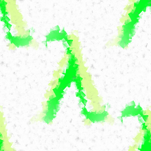

Lambda, filter, reduce and map
Lambda Operator

Some like it, others hate it and many are afraid of the lambda operator. We are confident, that you will like
it, when you have finished with this chapter of our tutorial. If not, you can learn all about
"List Comprehensions", Guido van Rossums preferred way to do it, because
he doesn't like Lamba, map, filter and reduce neither.
The lambda operator or lambda function is a way to create small anonymous functions, i.e. functions without
a name. These functions are throw-away functions, i.e. they are just needed where they have been created.
Lambda functions are mainly used in combination with the functions filter(), map() and reduce().
The lambda feature was added to Python due to the demand from Lisp programmers.
The general syntax of a lambda function is quite simple:
lambda argument_list: expression
The argument list consists of a comma separated list of arguments and the expression
is an arithmetic expression using these arguments. You can assign the
function to a variable to give it a name.
The following example of a lambda function returns the sum of its two arguments:
>>> f = lambda x, y : x + y >>> f(1,1) 2
The map() Function
The advantage of the lambda operator can be seen when it is used in combination with the map() function.map() is a function with two arguments:
r = map(func, seq)The first argument func is the name of a function and the second a sequence (e.g. a list) seq. map() applies the function func to all the elements of the sequence seq. It returns a new list with the elements changed by func
def fahrenheit(T):
return ((float(9)/5)*T + 32)
def celsius(T):
return (float(5)/9)*(T-32)
temp = (36.5, 37, 37.5,39)
F = map(fahrenheit, temp)
C = map(celsius, F)
In the example above we haven't used lambda. By using lambda, we wouldn't have had to define and name
the functions fahrenheit() and celsius(). You can see this in the following interactive session:
>>> Celsius = [39.2, 36.5, 37.3, 37.8] >>> Fahrenheit = map(lambda x: (float(9)/5)*x + 32, Celsius) >>> print Fahrenheit [102.56, 97.700000000000003, 99.140000000000001, 100.03999999999999] >>> C = map(lambda x: (float(5)/9)*(x-32), Fahrenheit) >>> print C [39.200000000000003, 36.5, 37.300000000000004, 37.799999999999997] >>>map() can be applied to more than one list. The lists have to have the same length. map() will apply its lambda function to the elements of the argument lists, i.e. it first applies to the elements with the 0th index, then to the elements with the 1st index until the n-th index is reached:
>>> a = [1,2,3,4] >>> b = [17,12,11,10] >>> c = [-1,-4,5,9] >>> map(lambda x,y:x+y, a,b) [18, 14, 14, 14] >>> map(lambda x,y,z:x+y+z, a,b,c) [17, 10, 19, 23] >>> map(lambda x,y,z:x+y-z, a,b,c) [19, 18, 9, 5]We can see in the example above, that the parameter x gets its values from the list a, while y gets its values from b and z from list c.
Filtering
The function filter(function, list) offers an elegant way to filter out all the elements of a list, for which the function function returns True.The function filter(f,l) needs a function f as its first argument. f returns a Boolean value, i.e. either True or False. This function will be applied to every element of the list l. Only if f returns True will the element of the list be included in the result list.
>>> fib = [0,1,1,2,3,5,8,13,21,34,55] >>> result = filter(lambda x: x % 2, fib) >>> print result [1, 1, 3, 5, 13, 21, 55] >>> result = filter(lambda x: x % 2 == 0, fib) >>> print result [0, 2, 8, 34] >>>
Reducing a List
The function reduce(func, seq) continually applies the function func() to the sequence seq. It returns a single value.If seq = [ s1, s2, s3, ... , sn ], calling reduce(func, seq) works like this:
- At first the first two elements of seq will be applied to func, i.e. func(s1,s2) The list on which reduce() works looks now like this: [ func(s1, s2), s3, ... , sn ]
- In the next step func will be applied on the previous result and the third element of the list,
i.e. func(func(s1, s2),s3)
The list looks like this now: [ func(func(s1, s2),s3), ... , sn ] - Continue like this until just one element is left and return this element as the result of reduce()
>>> reduce(lambda x,y: x+y, [47,11,42,13]) 113The following diagram shows the intermediate steps of the calculation:

Examples of reduce()
Determining the maximum of a list of numerical values by using reduce:>>> f = lambda a,b: a if (a > b) else b >>> reduce(f, [47,11,42,102,13]) 102 >>>Calculating the sum of the numbers from 1 to 100:
>>> reduce(lambda x, y: x+y, range(1,101)) 5050